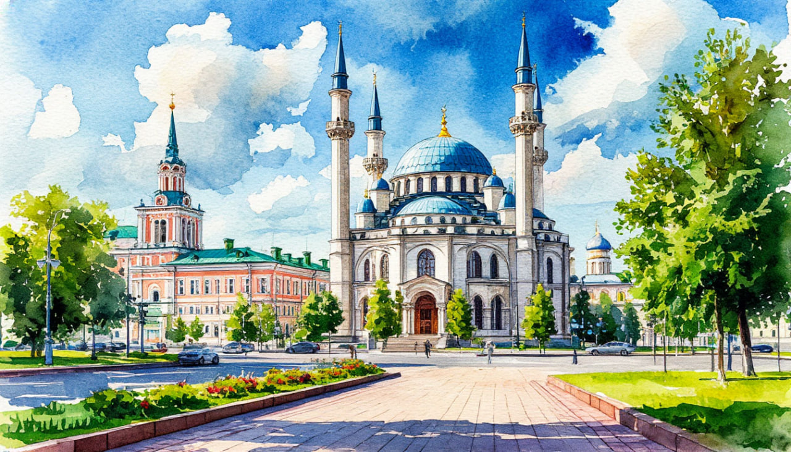

Легенды Старины | Экономичный тур

Даты тура: 17 - 20 июля | 07 - 10 августа | 21 - 24 августа
Стоимость тура:
- 19 700 р. - взрослый
- 19 600 р. - пенсионеры/студенты/школьники
- 23 500 р./чел - одноместное размещение
По программе:
- - Обзорная экскурсия по Казани
- - Экскурсия по территории Кремля, мечеть Кул-Шариф
- - Старо-Татарская слобода
- - Фирменный магазин Бахетле
- - Раифский Богородицкий мужской монастырь
- - Храм всех религий
- - Свияжск
Программа тура:
1 день: Отправление
- 18-00- выезд из Костромы от ТРЦ "РИО" (Ул. Магистральная, 20), правый угол от центрального входа
2 день:
- Прибытие в Казань
- Завтрак в кафе города.
- Экскурсия по территории музея-заповедника «Казанский Кремль» — объекта всемирного наследия ЮНЕСКО. В ходе экскурсии вы увидите
- - Спасскую башню – главные ворота Кремля;
- - мечеть "Кул Шариф" – главную мечеть города и республики и посетите ее
- - Благовещенский собор;
- - пушечный двор;
- - резиденцию президента РТ (губернаторский дворец);
- - символ Казани - знаменитую «падающую» башню ханши Сююмбике
- Автобусная обзорная экскурсия по городу с посещением улицы Кремлевской, Старотатарской слободы, мечети «Азимовская» или «Марджани», парка 1000-летия Казани, ул. Петербургской, внешний осмотр «Родной деревни», Собора Петра и Павла, Посещение Крестовоздвиженской церкви с осмотром Казанской иконы Божьей Матери.
- Вы увидите:
- - Старо-татарскую слободу со старинными татарскими мечетями;
- - овеянное легендами озеро Кабан;
- - здание – парусник Татарского академического театра им Г. Камала;
- - татарскую деревню «Туган Авылым»;
- - сказочный дворец - театр кукол "Экият";
- - Казанский Университет;
- - площадь Свободы – культурный и административный центр Казани;
- - Богородицкий монастырь и его святыню Казанскую икону Божией Матери
- Обед в кафе
- Размещение в гостинице
- Дополнительно оплачивается (по жаланию):
- - Экскурсия "Вечерняя Казань"
- Экскурсия по вечерней Казани — время, проведенное с радостью. Подсветка делает Казань волшебной и это стоит увидеть хотя бы раз. Хотя мы точно знаем, что все, кто увидел раз, захочет снова и снова. Красивые исторические и современные здания заиграют новыми гранями благодаря искусству осветителей. Фонари и фонтаны очаруют любого, кто неравнодушен к световым эффектам.
- Стоимость: взрослые - 1500 руб/чел, дети до 16 лет - 1300 руб/чел
3 день:
- Завтрак в отеле
- Дополнительно оплачивается (по жаланию) СТРОГО ПРИ БРОНИРОВАНИИ ТУРА:
- Теплоходная экскурсия по Казанке «Вдохновение столицей»
- Стоимость: 2000 руб./чел - взрослый, 1900 руб./чел - дети до 14 лет, пенсионеры
- Приглашаем вас на 40- минутное путешествие по Казанке, которое начинается и заканчивается на причале у нового архитектурного символа города – Центра семьи Казан. Стоят рядом на высоких постаментах, отлитые из бронзы парные фигуры мифических барса и зиланта, величественные стражи города, панорамой которого мы будем любоваться с борта прогулочного теплохода.Вид на известные достопримечательности города, который открывается исключительно со стороны реки, может удивить не только гостей столицы, но и коренных казанцев.. Во время прогулки, подставив лицо свежему ветерку, вслушиваясь в плеск воды, вы не только полюбуетесь открыточными видами Казани с воды, но и узнаете: - какой была Казанка чуть более, чем полвека назад, сколько мостов соединяют берега Казанки в черте города. А еще вы сможете загадать желания, проходя под мостами - а эти желания всегда сбываются!
- Далее... Посещение фирменного магазина Бахетле, где вы сможете приобрести сувениры, национальные угощения (конскую колбасу, вяленного гуся, кырт, чак-чак, талкыш калевэ, татарскую выпечку и многое другое)
- Экскурсия «Овеянная легендами земля» в Раифский Богородицкий мужской монастырь. Расположенный в 30 км. от Казани, в заповедном лесу на берегу дивной красоты озера, Монастырь основан в 17 веке. Его архитектурный ансамбль — один из самых величественных в среднем Поволжье складывался в течение столетий.
- Вы увидите:
- - церковь во имя Святых преподобных Отцов в Синае и Раифе избиенных, от которой и произошло название монастыря;
- - церковь Веры, Надежды, Любови и матери их Софии;
- - озеро Раифское, "неквакующих" лягушек, великолепный сосновый лес;
- - часовню, освящённую патриархом с источником "святой воды"
- Вы посетите:
- - Собор Троицы Живоначальной (Троицкий собор);
- - Собор Грузинской иконы Божией Матери, где находится святыня монастыря - чудотворный Грузинский образ пресвятой Богородицы
- Посещение «Храма всех религий» (внешний осмотр). В основе – идея о том, что все религии Мира — едины. Все они ведут к свету и добру. Это – смелая идея соединить в одном архитектурном строении, казалось бы, не сочетаемое. Комплекс объединяет 16 Мировых религий (в том числе и исчезнувших).
- Храм всех религий в Казани является одним из самых интересных архитектурных памятников города на Волге. В нем мирно соседствуют между собой культовые сооружения: Христианства, Иудаизма, Слама и других религий
- Экскурсия на остров-град Свияжск, расположенный в месте слияния двух рек – Свияги и Волги, откуда Иван Грозный начал свой поход на Казань. Не было в России уголка, где бы на 1 кв. км. приходилось бы столько церквей и монастырей.
- Вы увидите:
- - действующий Успенский монастырь с его архитектурным ансамблем 16-18 веков, включённый в список Всемирного наследия Юнеско;
- - бывший женский Иоанно–Предтеченский монастырь с внешним осмотром двух церквей: Церкви Живоначальной Троицы – единственной сохранившейся постройки деревянной крепости 16 в. со времён Ивана Грозного; Церкви во имя Сергия Радонежского – покровителя острова;
- - Собор Богоматери "Всех Скорбящих Радость" – величественный пятиглавый храм в нео-византийском стиле;
- - Рождественскую площадь – главную площадь Свияжска с осмотром архитектурного ансамбля;
- - Конный двор и Ленивый Торжок – сувениры, мастера – ремесленники;
- - смотровую площадку Рождественской площади, откуда открывается вид на живописный Свияжский Залив и храмовые комплексы монастыря Макарьевской пустыни и Церковь Константина и Елены
- Обед в кафе
- Отъезд. Ночной переезд.
4 день:
Прибытие в Кострому в первой половине дня (ориентировочно)
В стоимость тура входит:
- - проживание в гостинице*
- * Отель "Амакс Сафар" 3* на программу с 17 по 20 июля (Номер реестровой записи: С162024007820)
- * Отель "Волга" 2* на остальные даты (Номер реестровой записи: С162024020566)
- - питание: 2 завтрака + 2 обеда
- - услуги гида-экскурсовода
- - экскурсионная программа
- - автобусное обслуживание по программе тура
Дополнительно оплачиваются (по желанию):
- - Вечерняя экскурсия «Огни Казани». Стоимость - 1500 руб./взр., 1300 руб./шк. до 16 лет.
- - СТРОГО ПРИ БРОНИРОВАНИИ ТУРА. Речная прогулка по Казанке «Вдохновение столицей». Стоимость - 2 250 руб./взр., 2 150 руб./шк. до 14 лет, пенсионеры
- Для бронирования необходимы данные паспорта РФ и свидетельства о рождении, если с вами путешествуют дети
- Предоплата – 50% от стоимости тура. Остаток за 30 дней до даты выезда.
- Любой тур можно оформить не выходя из дома. Подробнее: Тут
Стоимость тура не зафиксированы и могут быть изменены в большую или меньшую сторону в зависимости от уровня спроса в любой момент.
Время начала экскурсий и их порядок указано ориентировочно.
Фирма-исполнитель оставляет за собой право замены экскурсий без уменьшения общего объема экскурсионной программы.
По вопросам бронирования обращайтесь: